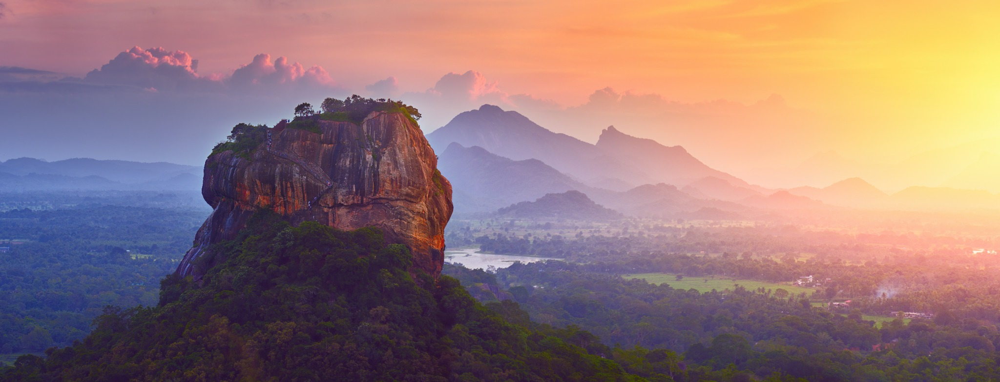

Cultural Heritage2 days · Sample route
Sigiriya & Dambulla Heritage Trail
Day 1: Visit the Sigiriya Rock Fortress and its historic gardens. Day 2: Explore the Dambulla Cave Temple and nearby cultural heritage.
Sample itinerary · No bookings or pricesEnquire now